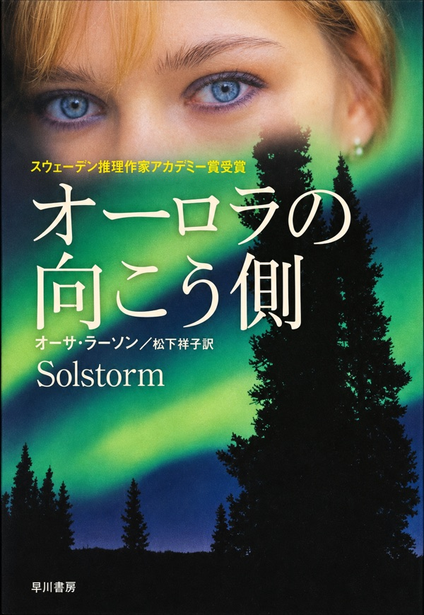
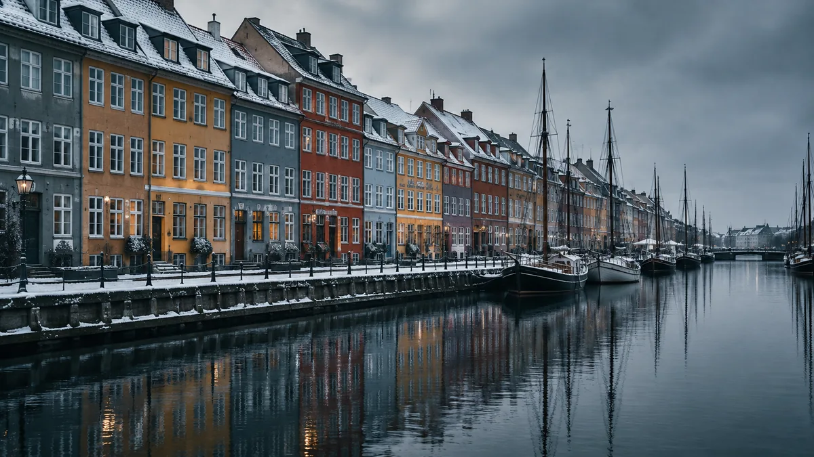
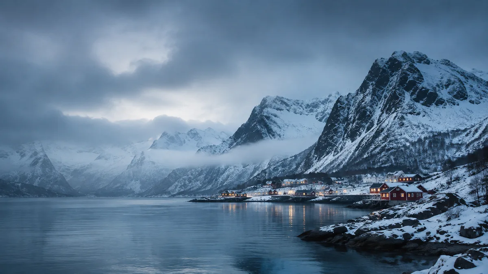
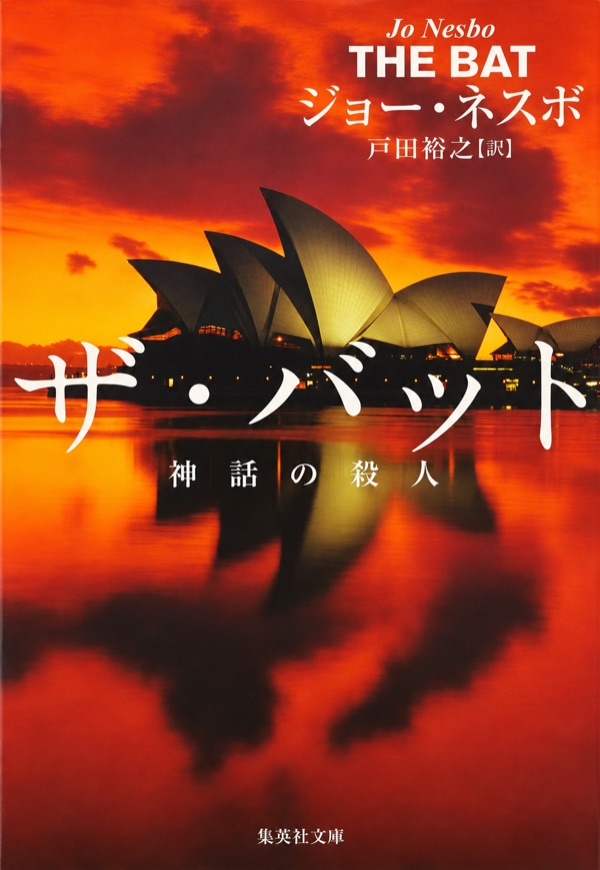
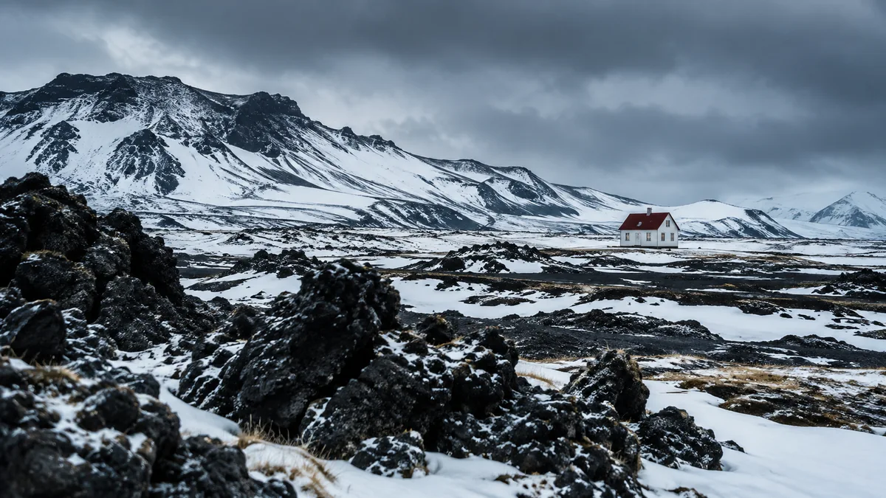
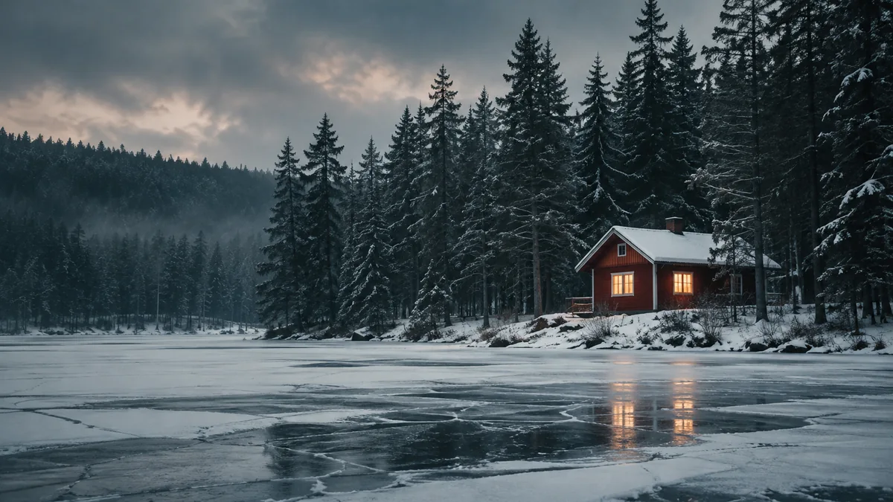
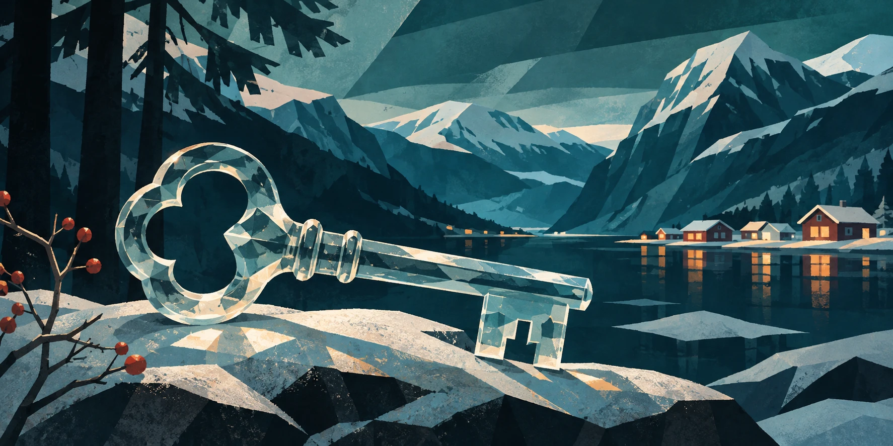

この記事の目次
北欧ミステリとは？ その魅力と歴史
北欧ミステリは、スウェーデン、デンマーク、ノルウェー、アイスランド、フィンランドの5か国で書かれた犯罪小説・警察小説を指す呼び名です。暗く重い作風を強調して「北欧ノワール」と呼ばれることもあります。
大きな特徴は、事件の背後にある社会の姿を描くこと。豊かな福祉国家として知られる国々の陰で、移民や格差、女性や子どもへの暴力、閉じた共同体の沈黙といった問題が、捜査を通して少しずつ浮かび上がります。刑事たちも万能のヒーローではなく、家族とすれ違い、疲れを抱えながら働く普通の人として描かれることが多く、その等身大の姿も読みどころです。
- アイスランド
- ノルウェー
- スウェーデン
- フィンランド
- デンマーク
地図データ：Natural Earth（1:50m、パブリックドメイン）を基に簡略化。色分けは各国の本土のみで、グリーンランドやフェロー諸島などは周辺地域と同じ灰色で示しています。
歴史をざっくりたどる
- 1960〜70年代：スウェーデンのマイ・シューヴァルとペール・ヴァールーが、刑事マルティン・ベックを主人公とする全10作のシリーズを発表。第1作が『ロセアンナ』。地道な捜査と社会批判を組み合わせた作風が、のちの北欧警察小説の土台になりました。シリーズ第4作『笑う警官』は1971年にエドガー賞最優秀長編賞を受賞しています（エドガー賞受賞作『笑う警官』の紹介）。
- 1990年代：ヘニング・マンケルの『殺人者の顔』（1991年、原書）から始まる〈刑事ヴァランダー〉シリーズが国外でも広く読まれます。1992年には北欧ミステリの文学賞「ガラスの鍵賞」が創設され、第1回を同作が受賞しました。
- 2000年代：アイスランドのアーナルデュル・インドリダソンが『湿地』と『緑衣の女』で2年連続ガラスの鍵賞を受賞。2005年には、刊行前年に亡くなったスティーグ・ラーソンの〈ミレニアム〉が出版され、世界的なベストセラーになります。日本語版は2008年に刊行されました。
- 2010年代以降：ノルウェーのジョー・ネスボ、デンマークのユッシ・エーズラ・オールスン、スウェーデンのラーシュ・ケプレルらの人気シリーズが次々と翻訳され、北欧ミステリは翻訳ミステリの一大ジャンルとして定着しました。
- 1960〜70年代
マルティン・ベックシリーズ
北欧警察小説の原点
- 1990年代
刑事ヴァランダーシリーズ
ガラスの鍵賞創設
- 2000年代
インドリダソンの国際的評価
ミレニアムの世界的ヒット
- 2010年代以降
ネスボ、特捜部Q、ケプレルなど人気シリーズの多様化
初めて読むなら、この5作品
北欧ミステリにまだなじみがない人のために、読みやすさ、話題性、シリーズへの入りやすさを基準に5作品を選びました。国も作風もばらばらなので、気になる一冊から手に取ってみてください。後半の「北欧ミステリの傑作25選」と合わせて、全30作品を紹介します。
北欧警察小説の流れはここから

『殺人者の顔』
あらすじ雪の予感がする冬の早朝、スウェーデン南部の農村で老夫婦が襲われる。夫は殺され、妻は「外国の」という言葉を残して息を引き取る。捜査を担うのは、イースタ署の刑事クルト・ヴァランダー。
読みどころ捜査は地道で、事件の行方とともに外国人排斥へ傾く世論や、家族とのすれ違いに悩むヴァランダー自身の姿が描かれる。派手さよりも、社会と個人の疲れが重なる重みで読ませる。巻を追うごとに変わっていくヴァランダーの人生も追いたくなる、北欧警察小説の基本形。第1回ガラスの鍵賞（1992年）の受賞作。
- シリーズ
- 〈刑事ヴァランダー〉シリーズ第1作
- 日本語版
- 創元推理文庫（東京創元社）／柳沢由実子 訳／2001年／ISBN 978-4-488-20902-5
北欧ミステリを世界に広めた一冊

『ミレニアム1
ドラゴン・タトゥーの女』
あらすじ名誉毀損裁判に敗れたジャーナリストのミカエルは、大企業グループの元会長から、40年前に一族の島で姿を消した少女ハリエットの行方を調べてほしいと依頼される。やがて調査に、天才ハッカーのリスベット・サランデルが加わる。
読みどころ閉ざされた一族の過去をたどる謎解きに、経済ジャーナリズムと社会派のテーマが重なり、上下巻の長さを一気に読ませる。リスベットという強烈な主人公の存在感も、シリーズが読み継がれる理由のひとつ。2006年ガラスの鍵賞受賞。
- シリーズ
- 〈ミレニアム〉シリーズ第1作（第3部までがラーソンの作。第4部以降は別の作家が執筆）
- 日本語版
- ハヤカワ・ミステリ文庫（早川書房）上・下／ヘレンハルメ美穂・岩澤雅利 訳／2011年（単行本は2008年）／ISBN 978-4-15-179251-9（上）
“窓際部署”が未解決事件に挑む

『特捜部Q―檻の中の女―』
あらすじ捜査への情熱を失っていたコペンハーゲン警察のカール・マークは、未解決の重大事件を専門に扱う新部署「特捜部Q」を任される。オフィスは窓のない地下室、部下はシリア系のアサドひとり。最初に手をつけたのは、5年前に自殺として片づけられた女性議員の失踪事件だった。
読みどころ偏屈なカールと、どこか謎めいたアサドのかけ合いが軽妙で、重い事件でも読み口は意外なほど軽い。過去と現在の二つの時間が交互に描かれ、緊張が途切れない。シリーズの入口として選びやすい一冊。
- シリーズ
- 〈特捜部Q〉シリーズ第1作
- 日本語版
- ハヤカワ・ミステリ文庫（早川書房）／吉田奈保子 訳／2012年（単行本は2011年）／ISBN 978-4-15-179451-3
雨の首都で掘り返される老人の過去

『湿地』
あらすじレイキャヴィクの湿地にある集合住宅で、老人の死体が見つかる。現場には意味のつかめないメッセージが残されていた。捜査官エーレンデュルは、被害者の過去をたどるうちに、長く埋もれていた出来事に行き当たる。
読みどころ人口の少ない島国ならではの人間関係の近さと、記録や血縁をめぐるテーマが物語の芯になる。冷えた空気と、寡黙な捜査官の孤独が静かに効いてくる。たどり着く真相は苦く、読後の余韻が長く残る。2002年ガラスの鍵賞受賞。
- シリーズ
- 〈エーレンデュル捜査官〉シリーズ。日本語版はこの作品から（原書ではシリーズ3作目）
- 日本語版
- 創元推理文庫（東京創元社）／柳沢由実子 訳／2015年（単行本は2012年）／ISBN 978-4-488-26603-5
雪の港町で起きる古典的な謎解き
『雪盲』
あらすじ警察官になったばかりの青年が、アイスランド北部の小さな港町に赴任する。冬には雪で外への道が途絶えがちな町で、地元の劇団の重鎮だった老作家が劇場で転落死し、さらに雪の中に倒れた女性が見つかる。
読みどころ閉ざされた町と限られた住人という条件が、クラシックな犯人当ての面白さを生む。北の果ての暗さと静けさ、新人警官の心細さが重なり、雪そのものが登場人物のように感じられる。分量も手頃で、北欧の風景を味わう入口に向く。
- シリーズ
- 新人警官を主人公とするシリーズの第1作（原書）
- 日本語版
- 小学館文庫（小学館）／吉田薫 訳／2017年／ISBN 978-4-09-406309-7
北欧ミステリの傑作25選
ここからは国別に25作品を紹介します。社会派の名作から、一気読みの犯罪スリラー、静かな心理劇まで幅広く選びました。「初めて読むなら、この5作品」と合わせた30作品が、この特集の本選です。
スウェーデン（9作品）
北欧警察小説の原点にして、いまも新しい

『ロセアンナ』
あらすじある夏、運河の浚渫作業中に若い女性の遺体が引き上げられる。身元の手がかりはほとんどない。ストックホルム警察のマルティン・ベックは、彼女が誰なのかを突き止めるところから捜査を始める。
読みどころ何か月にもわたる照会、空振りに終わる聞き込み、ひたすら待つ時間。捜査の地道な手続きを省かずに積み重ねたリアリズムが、刑事たちの疲れや焦りまで生々しく伝えてくる。この作風が、のちの北欧警察小説の土台になった。
- シリーズ
- 〈刑事マルティン・ベック〉シリーズ（全10作）第1作
- 日本語版
- 角川文庫（KADOKAWA）／柳沢由実子 訳／2014年／ISBN 978-4-04-101383-0
港町の噂と秘密を生活感豊かに描く
『氷姫 エリカ&
パトリック事件簿』
あらすじ作家のエリカは、両親の死をきっかけにスウェーデン西海岸の故郷の町へ戻る。そこで幼なじみのアレクスが、凍った浴槽の中で手首を切った姿で見つかる。自殺とされたが、違和感を抱いたエリカは彼女の過去を調べはじめる。
読みどころ小さな町の人間関係を丁寧に描く“町もの”の味わいに、地元の刑事パトリックとの距離が縮まっていく軽やかさが加わる。北欧ミステリに慣れていない読者でも入りやすい。
- シリーズ
- 〈エリカ&パトリック事件簿〉シリーズ第1作
- 日本語版
- 集英社文庫（集英社）／原邦史朗 訳／2009年／ISBN 978-4-08-760584-6
キルナで交差する信仰と故郷の傷

『オーロラの向こう側』
あらすじスウェーデン最北の町キルナの教会で、カリスマ的な若い伝道師が惨殺される。ストックホルムで弁護士として働く女性は、事件に巻き込まれた幼なじみに助けを求められ、二度と戻らないつもりだった故郷へ帰る。
読みどころ極北の冬の光と闇、信仰共同体の閉じた空気、主人公が故郷に残した傷。謎と同じくらい、土地の気配が強く残る。英訳版は2007年に英国推理作家協会賞インターナショナル・ダガーの最終候補になった。
- シリーズ
- 弁護士の女性を主人公とするシリーズの第1作
- 日本語版
- ハヤカワ・ミステリ文庫（早川書房）／松下祥子 訳（英訳からの翻訳）／2008年／ISBN 978-4-15-177851-3
霧の島で、二十数年前に消えた少年を探す

『黄昏に眠る秋』
あらすじ霧に包まれたエーランド島で、幼い少年が姿を消した。二十数年後の秋、少年が当時履いていた靴が、祖父で元船長のイェルロフのもとに届く。イェルロフは、息子を失ってから立ち直れずにいる娘ユリアとともに、もう一度孫を探しはじめる。
読みどころ島の過去と現在を行き来する構成で、老いた父と娘が少しずつ向き合っていく過程が胸に残る。スウェーデン推理作家アカデミー最優秀新人賞と、英国推理作家協会賞の最優秀新人賞を受賞（出版社の紹介より）。
- シリーズ
- 〈エーランド島〉四部作の第1作
- 日本語版
- ハヤカワ・ミステリ文庫（早川書房）／三角和代 訳／2013年（ポケット・ミステリ版は2011年）／ISBN 978-4-15-179701-9
法か、報復か。北欧社会派の重い問い

『制裁』
あらすじ少女への凶悪犯罪で服役していた男が、移送中に脱走する。ストックホルム市警のグレーンス警部が行方を追うなか、ある町では、幼い娘をもつ父親の日常に不穏な影が差していく。
読みどころ罪を犯した者を社会はどう扱い、被害者の側に立つ人々はそれをどう受け止めるのか。法と報復、世論の揺れを正面から描く。救いの少なさも含めて、強い読後感が残る。登場人物の誰にも簡単には肩入れできない構成が、読む側に判断を迫ってくる。2005年ガラスの鍵賞受賞。
- シリーズ
- 〈グレーンス警部〉シリーズ第1作
- 日本語版
- ハヤカワ・ミステリ文庫（早川書房）／ヘレンハルメ美穂 訳／2017年（単行本はランダムハウス講談社、2007年）／ISBN 978-4-15-182153-0
封印した催眠が、医師自身の家族を揺さぶる
『催眠』
あらすじストックホルム郊外で一家が惨殺され、ただひとり生き残った少年も重傷を負う。国家警察のヨーナ・リンナ警部は、少年から証言を得るため、かつて催眠療法の第一人者だった医師エリックに協力を求める。
読みどころ場面と視点がめまぐるしく切り替わる犯罪スリラーで、上下巻を勢いのまま読み切れる。事件の謎と並行して、医師エリックが抱えてきた過去と家族の問題が浮かび上がる。著者名は夫婦作家の共同筆名。
- シリーズ
- 〈ヨーナ・リンナ警部〉シリーズ第1作
- 日本語版
- ハヤカワ・ミステリ文庫（早川書房）上・下／ヘレンハルメ美穂 訳／2010年／ISBN 978-4-15-178851-2（上）
殺人犯として追われる家のない女性
『喪失』
あらすじストックホルムで住まいを持たずに暮らす32歳のシビラ。ある日突然、彼女は連続猟奇殺人の犯人として警察に追われる身になる。食べ物と寝場所を求めながら、彼女は逃げ続けるしかない。
読みどころ真犯人を探す逃亡劇であると同時に、家族との確執から逃れてきたシビラの過去が少しずつ明かされる心理劇でもある。社会からこぼれ落ちた女性の視点が、事件に独特の切実さを与えている。2001年ガラスの鍵賞受賞。
- シリーズ
- 単発作品
- 日本語版
- 小学館文庫（小学館）／柳沢由実子 訳／2005年／ISBN 4-09-405461-8
白夜の一本道を、父は今夜も走り続ける
『娘を呑んだ道』
あらすじ3年前、スウェーデン北部の村で17歳のリナが姿を消した。数学教師の父レレは、今もひとりで娘の捜索を続け、夜通し車を走らせている。同じころ、母親とともに村へ越してきた少女メヤも、自分の居場所を求めてもがいていた。
読みどころ果てしない森と一本道、沈まない夏の太陽。二つの視点が少しずつ近づいていく過程が、北の風景とともに静かな緊張を生む。警察小説ではなく、喪失を抱えた人々の物語として読める犯罪小説。2019年ガラスの鍵賞受賞。
- シリーズ
- 単発作品
- 日本語版
- 小学館文庫（小学館）／田口俊樹 訳（英訳からの翻訳）／2020年／ISBN 978-4-09-406705-7
首相暗殺の夜と、小さな村の殺人がつながる

『暗殺の冬』
あらすじ1986年、スウェーデン首相が撃たれた夜、小さな村で一人の女性が殺される。それは長い年月をまたぐ連続殺人の入口だった。二世代の刑事と、故郷に戻った作家の視点が重なりながら、封印された罪に迫っていく。
読みどころ国じゅうを揺るがした事件の記憶が、田舎町に暮らす人々の人生にどんな影を落としたのか。硬質な文体と、時間をかけて積み上がる人物描写が持ち味。著者は2024年にガラスの鍵賞を受賞している（受賞作は別作品）。
- シリーズ
- 単発作品として読める
- 日本語版
- 文春文庫（文藝春秋）／棚橋志行 訳／2026年／ISBN 978-4-16-792514-7
デンマーク（4作品）

雪を読む女性が、少年の死の真相を追う
『スミラの雪の感覚』
あらすじコペンハーゲンの集合住宅で、グリーンランド出身の少年が屋根から転落死する。警察は事故として処理するが、同じ建物に住むスミラは、屋上の雪に残った足跡に違和感を覚える。雪と氷を読む感覚を頼りに、彼女はひとりで真相を追いはじめる。
読みどころデンマークとグリーンランドの複雑な関係、孤独な主人公の鋭い観察と語りが際立つ。ミステリとしても文学作品としても評価の高い一冊で、物語はやがて北の海へと広がっていく。1993年ガラスの鍵賞受賞。
- シリーズ
- 単発作品
- 日本語版
- 新潮社／染田屋茂 訳（英訳からの翻訳）／1996年／ISBN 4-10-532201-X
娘を“死んだこと”にした父親の、静かな狂気

『樹脂』
あらすじ人里離れた半島の森で暮らす一家。つらい喪失を重ねてきた父親は、これ以上何も奪われまいと、幼い娘が死んだと偽って届け出る。そして娘を隠したまま育てはじめる。
読みどころ冒頭から異様な家族の姿が示され、なぜそうなったのかを娘の語りと周囲の証言でたどっていく。寓話のような静けさと、ものを溜め込み続ける家の息苦しさが忘れがたい。語りが切り替わるたびに、家族の像が少しずつ違って見えてくる。2016年ガラスの鍵賞受賞。
- シリーズ
- 単発作品
- 日本語版
- ハヤカワ・ポケット・ミステリ（早川書房）／枇谷玲子 訳／2017年／ISBN 978-4-15-001923-5
コインロッカーの中に、小さな男の子がいた

『スーツケースの中の少年』
あらすじ赤十字で働く看護師のニーナは、友人に頼まれてコペンハーゲン中央駅のコインロッカーを開ける。中にあったスーツケースには、3歳ほどの男の子が入れられていた。
読みどころ誰が、なぜ子どもを運ぼうとしたのか。わが子を捜すリトアニアの母親の視点が並行し、国境を越える犯罪の現実が浮かび上がる。正義感が強すぎて家族とすれ違うニーナの人物像も印象に残る。警察ではなく看護師の立場から事件に関わる点も、独特の緊張感を生んでいる。
- シリーズ
- 看護師ニーナを主人公とするシリーズの第1作
- 日本語版
- 講談社文庫（講談社）／土屋京子 訳（英訳からの翻訳）／2013年／ISBN 978-4-06-277597-7
一枚の古い写真が、国家の中枢を揺らす

『7人目の子』
あらすじ児童養護院で撮られた、7人の幼い子どもの写真。その写真が載った古い記事と、ベビーソックスの入った封筒が、デンマーク国務省に届く。封筒には養子縁組の申請書も同封されていた。
読みどころ養護院にいた子どもたちのその後と、国の中枢に隠された秘密が、複数の人物の視点から少しずつつながっていく。デンマーク社会の階層や出自の問題を背景にした、厚みのある群像ミステリ。2012年ガラスの鍵賞受賞。
- シリーズ
- 単発作品
- 日本語版
- ハヤカワ・ミステリ文庫（早川書房）上・下／長谷川圭 訳（独訳からの翻訳）／2014年／ISBN 978-4-15-180701-5（上）
ノルウェー（5作品）

刑事ハリー・ホーレ、最初の事件

『ザ・バット 神話の殺人』
あらすじオスロ警察の刑事ハリー・ホーレは、オーストラリアのシドニーへ派遣される。現地で殺害されたノルウェー人女性の事件に協力するためだ。地元の刑事アンドリューと組んで捜査を進めるうちに、事件の奥に広がる影が見えてくる。
読みどころ酒に問題を抱えたハリーの危うさと、先住民の歴史を語るアンドリューとの関係が物語に陰影を与える。シリーズの原書第1作で、1998年ガラスの鍵賞受賞。ハリーの原点を知りたい人に。
- シリーズ
- 〈刑事ハリー・ホーレ〉シリーズの原書第1作
- 日本語版
- 集英社文庫（集英社）／戸田裕之 訳（英訳からの翻訳）／2014年／ISBN 978-4-08-760688-1
初雪の夜に消えた母と、雪だるま
『スノーマン』
あらすじその冬最初の雪が降った夜、オスロで一人の母親が姿を消す。家の庭には、彼女のスカーフを巻いた雪だるまが立っていた。刑事ハリー・ホーレは、過去の失踪事件との不気味な共通点に気づく。
読みどころ冬のオスロの冷たさと、張りつめた追跡劇。ネスボの持ち味であるどんでん返しと疾走感が強く出た一作で、北欧の犯罪スリラーを代表する人気作。原書ではシリーズ7作目だが、この作品から読みはじめても楽しめる。
- シリーズ
- 〈刑事ハリー・ホーレ〉シリーズ（原書7作目）
- 日本語版
- 集英社文庫（集英社）上・下／戸田裕之 訳（英訳からの翻訳）／2013年／ISBN 978-4-08-760674-4（上）
穏やかな村の内側にある、沈黙と痛み

『湖のほとりで』
あらすじノルウェーの小さな村で、湖のほとりから少女アニーの遺体が見つかる。村の誰からも好かれていた彼女に、何があったのか。ベテランの警部が、住人ひとりひとりの話に耳を傾けていく。
読みどころ犯人探しよりも、穏やかに見える共同体の内側と、家族が抱えていた沈黙に光を当てる作品。抑えた筆致で、人の心の揺れを丁寧にすくい上げる。派手な展開はないが、読み終えたあとも登場人物の顔が長く残る。1997年ガラスの鍵賞受賞。
- シリーズ
- 警部を主人公とするシリーズの1作（原書2作目）
- 日本語版
- PHP文芸文庫（PHP研究所）／成川裕子 訳（英訳からの翻訳）／2011年／ISBN 978-4-569-67618-0
自分が挙げた事件の証拠が、偽造されていた

『猟犬』
あらすじ17年前の誘拐殺人事件で、容疑者を有罪にした決め手の証拠が偽造されていたことがわかる。捜査を指揮した刑事ヴィスティングは責任を問われ、停職処分を受ける。新聞記者の娘リーネの助けを借りながら、彼はひとりで真相を追う。
読みどころ警察官として働いていた著者らしい、手続きと現場の手触りに裏打ちされた捜査小説。父と娘の関係、報道と警察の距離感も読みどころ。2013年ガラスの鍵賞受賞（出版社の紹介ではマルティン・ベック賞、ゴールデン・リボルバー賞と合わせて三冠）。
- シリーズ
- 〈ヴィスティング〉シリーズ（日本語版の第1作）
- 日本語版
- ハヤカワ・ポケット・ミステリ（早川書房）／猪股和夫 訳／2015年／ISBN 978-4-15-001892-4
「ひとりで旅をしています」と書かれた札
『オスロ警察殺人捜査課特別班 アイム・トラベリング・アローン』
あらすじオスロ近郊の森で、人形のような服を着せられた6歳の少女が、木に吊るされた姿で見つかる。首には「ひとりで旅をしています」と書かれた札。特別班を率いる警部は、心に傷を負って島に引きこもっていた元同僚の女性刑事を呼び戻す。
読みどころ猟奇的な事件と、癖の強い捜査班の人間ドラマが並行して進む、テンポのよい犯罪スリラー。心に傷を抱えた二人の刑事の関係が、シリーズを通しての読みどころになっている。
- シリーズ
- オスロ警察特別班シリーズの第1作
- 日本語版
- ディスカヴァー文庫（ディスカヴァー・トゥエンティワン）全2巻／中谷友紀子 訳／2019年（単行本は2016年）／ISBN 978-4-7993-2452-3（1巻）
アイスランド（4作品）

土の中から出た骨と、緑のコートの女

『緑衣の女』
あらすじレイキャヴィク郊外の住宅地で、子どもが人間の骨を拾ってくる。最近埋められたものではない。付近にはかつてサマーハウスがあり、戦時中には英米軍のバラックもあったらしい。住人の証言に、緑のコートを着た女の姿が浮かび上がる。
読みどころ過去の家庭内暴力の記憶と、捜査官エーレンデュル自身の家族の問題が重なり、シリーズでも屈指の痛切さをもつ。2003年ガラスの鍵賞、2005年英国推理作家協会賞ゴールド・ダガー受賞。
- シリーズ
- 〈エーレンデュル捜査官〉シリーズ（日本語版第2作）
- 日本語版
- 創元推理文庫（東京創元社）／柳沢由実子 訳／2016年（単行本は2013年）／ISBN 978-4-488-26604-2
故郷の港町の灯台で、女性の遺体が見つかる
『軋み』
あらすじ恋人との暮らしが唐突に終わり、レイキャヴィク警察を辞めて故郷の町アークラネスに戻ったエルマ。地元の警察で働きはじめてまもなく、観光名所の灯台の近くで女性の遺体が見つかる。
読みどころ小さな町が隠してきた過去と、エルマ自身の再出発が並行して描かれる、新しい世代のアイスランド・ミステリ。英訳版は英国推理作家協会賞のジョン・クリーシー（ニューブラッド）・ダガーを受賞した。
- シリーズ
- 刑事エルマを主人公とするシリーズの第1作
- 日本語版
- 小学館文庫（小学館）／吉田薫 訳／2022年／ISBN 978-4-09-407203-7
魔女狩りの歴史を研究していた留学生の死
『魔女遊戯』
あらすじアイスランド大学で、ドイツ人留学生の遺体が見つかる。両親から真相の究明を依頼されたのは、二人の子をもつ弁護士の女性。被害者が魔女狩りの歴史を研究していたことから、調査はアイスランドの古い魔術の世界へ踏み込んでいく。
読みどころ猟奇的な事件と、子育てに追われる主人公のユーモアある日常との落差が独特。歴史と伝承を絡めた謎解きを楽しめる。アイスランドの魔術や魔女狩りの歴史に興味がある人には、資料を読むような面白さもある。
- シリーズ
- 弁護士の女性を主人公とするシリーズの第1作
- 日本語版
- 集英社文庫（集英社）／戸田裕之 訳（英訳からの翻訳）／2011年／ISBN 978-4-08-760619-5
古写本と死者のポケットの紙切れ

『フラテイの暗号』
あらすじ西アイスランドのフィヨルドに浮かぶフラテイ島。アザラシ猟のために無人島へ渡った少年が、死後かなり時間のたった男性の遺体を見つける。ポケットには、意味の取れない言葉を書いた紙切れが入っていた。
読みどころ島に伝わる写本『フラテイの書』と暗号をめぐる謎解きに、島の暮らしと人々の距離感が溶け込む。素朴な島の時間を味わえる、風変わりな北欧ミステリ。ガラスの鍵賞の候補作（出版社の紹介より）。
- シリーズ
- 単発作品
- 日本語版
- 創元推理文庫（東京創元社）／北川和代 訳／2013年／ISBN 978-4-488-19603-5
フィンランド（3作品）

雪深い森で、有名セラピストの遺体

『雪の女』
あらすじエスポー警察の巡査部長マリア・カッリオは、女性限定のセラピーセンターでの講演を頼まれる。数週間後、そのセンターを開いた有名なセラピストが行方不明になり、雪深い森で遺体となって見つかる。
読みどころ訳ありの女性たちが集まる館という閉じた舞台と、小柄で率直なマリアの人物像が魅力。フィンランドの冬の森の冷たさが全編を包む。フィンランドの「推理の糸口賞」受賞作で、ガラスの鍵賞の候補にもなった（出版社の紹介より）。
- シリーズ
- 〈マリア・カッリオ〉シリーズの邦訳第1作（原書では4作目）
- 日本語版
- 創元推理文庫（東京創元社）／古市真由美 訳／2013年／ISBN 978-4-488-28004-8
内戦の傷が残る町で、警官は公正を貫けるか

『処刑の丘』
あらすじかつて虐殺の舞台となり〈黒が丘〉と呼ばれる場所で、男たちが「処刑」と称して一人の青年を銃殺する。警察は密造酒の取引をめぐる殺人として片づけようとするが、巡査ケッキは事件の陰に、まだ癒えない内戦の傷を見る。
読みどころ内戦に敗れた側の人々が鬱屈を抱えたまま暮らす町を舞台に、公正な捜査をしようとする警官の苦悩を描く歴史ミステリ。日本ではあまり知られていないフィンランド近代史に触れられる。「推理の糸口賞」受賞作（出版社の紹介より）。
- シリーズ
- 単発作品として読める
- 日本語版
- 東京創元社（単行本）／古市真由美 訳／2017年／ISBN 978-4-488-01066-9
ロシアとフィンランドの境界を生きる男
『殺人者の顔をした男』
あらすじロシアから移り住んだイングリア系フィンランド人のヴィクトルは、ヘルシンキで小さな事業を営みながら、同じ境遇の人々の暮らしを手助けしている。そんな彼が、古美術商から、行方のわからない妻を捜してほしいという報酬のよい依頼を受ける。
読みどころロシアとフィンランド、二つの国のあいだを生きる主人公の目を通して、ヘルシンキの裏社会と移民の暮らしが描かれる。犯罪小説の緊張感と、境界に生きる人々へのまなざしが同居する。著者は2007年にガラスの鍵賞を受賞している（受賞作はシリーズの別作品）。
- シリーズ
- ヴィクトルを主人公とするシリーズの第1作
- 日本語版
- 集英社文庫（集英社）／古市真由美 訳／2014年／ISBN 978-4-08-760686-7
北欧5か国のミステリはどう違う？
同じ「北欧」でも、国によって作品の雰囲気は少しずつ違います。大まかな傾向をつかんでおくと、次の一冊を選ぶ手がかりになります。
スウェーデン
マルティン・ベック、ヴァランダー、ミレニアムと続く、社会派警察小説の本流。シリーズものが多く、翻訳点数もいちばん豊富です。重厚な作品から一気読みのスリラーまで幅があります。
デンマーク
『特捜部Q―檻の中の女―』のような軽妙なチームもの、『スミラの雪の感覚』のような文学性の高い作品、『樹脂』のような寓話的な心理劇まで、作風の振れ幅が大きいのが特徴です。
ノルウェー
ジョー・ネスボの疾走感あるスリラーから、警察官出身のヨルン・リーエル・ホルストによる手堅い捜査小説、カリン・フォッスムの抑えた心理描写まで。都市と自然の距離が近い舞台も魅力です。
アイスランド
人口の少ない島国ならではの、人間関係の近さと閉塞感。過去の事件や家族の記憶が掘り起こされる作品が多く、厳しい自然と古い伝承が物語に溶け込みます。
フィンランド
翻訳作品は多くありませんが、内戦の記憶やロシアとの関係など、ほかの北欧諸国とは違う歴史を背景にした作品が読めます。女性刑事を主人公にした人気シリーズもあります。
ガラスの鍵賞とは？
ガラスの鍵賞は、スカンジナヴィア推理作家協会が1992年に創設した、北欧の犯罪小説を対象とする文学賞です。北欧5か国から候補作が選ばれ、そのなかから毎年1作が受賞します。賞の名前は、ダシール・ハメットの長編『ガラスの鍵』に由来します。
受賞者には、ヘニング・マンケル、スティーグ・ラーソン、アーナルデュル・インドリダソンら、日本でもおなじみの作家が名を連ねます。対象はスウェーデン、デンマーク、ノルウェー、アイスランド、フィンランドの作品で、受賞作を年代順に追っていくと、社会派の警察小説から心理サスペンス、国際的なスリラーへと、北欧ミステリが発展し、作風を広げてきた流れが見えてきます。
以下では、1992年の第1回から2026年までの全35作品を紹介します。日本語で読める作品も分かるように、邦訳情報と書影をあわせて掲載しました。

歴代受賞作一覧｜1992〜2026年
| 書影 | 受賞年 | 作品・著者 | 国 | 日本語版 |
|---|---|---|---|---|
| 1992 | 『殺人者の顔』原題：Mördare utan ansikte | スウェーデン | 日本語版あり創元推理文庫 |
| 1993 | 『スミラの雪の感覚』原題：Frøken Smillas fornemmelse for sne | デンマーク | 日本語版あり新潮社 | |
| 1994 | Sub rosa | ノルウェー | 日本語版未確認 | |
| 1995 | Masken i spejlet | デンマーク | 日本語版未確認 | |
| 1996 | Nattsug | ノルウェー | 日本語版未確認 | |
| 1997 | 『湖のほとりで』原題：Se deg ikke tilbake! | ノルウェー | 日本語版ありPHP文芸文庫 |
| 1998 | 『ザ・バット 神話の殺人』原題：Flaggermusmannen | ノルウェー | 日本語版あり集英社文庫 | |
| 1999 | Lime's Photograph原題：Lime's billede | デンマーク | 日本語版未確認 | |
| 2000 | Hour of the Wolf原題：Carambole | スウェーデン | 日本語版未確認 | |
| 2001 | 『喪失』原題：Saknad | スウェーデン | 日本語版あり小学館文庫 | |
| 2002 | 『湿地』原題：Mýrin | アイスランド | 日本語版あり東京創元社 |
| 2003 | 『緑衣の女』原題：Grafarþögn | アイスランド | 日本語版あり東京創元社 |
| 2004 | Hjemsøkt | ノルウェー | 日本語版未確認 | |
| 2005 | 『制裁』原題：Odjuret | スウェーデン | 日本語版ありハヤカワ・ミステリ文庫 |
| 2006 | 『ミレニアム1 ドラゴン・タトゥーの女』原題：Män som hatar kvinnor | スウェーデン | 日本語版あり早川書房 |
| 2007 | Ystävät kaukana | フィンランド | 日本語版未確認 | |
 | 2008 | 『ミレニアム3 眠れる女と狂卓の騎士』原題：Luftslottet som sprängdes※書影は早川書房公式サイトの電子書籍（上・下合本版）ページのもの | スウェーデン | 日本語版あり早川書房 |
 | 2009 | 『冬の灯台が語るとき』原題：Nattfåk | スウェーデン | 日本語版ありハヤカワ・ミステリ文庫 |
 | 2010 | 『特捜部Q―Pからのメッセージ―』原題：Flaskepost fra P | デンマーク | 日本語版ありハヤカワ・ミステリ文庫 |
 | 2011 | 『許されざる者』原題：Den döende detektiven | スウェーデン | 日本語版あり創元推理文庫 |
| 2012 | 『7人目の子』原題：Det syvende barn | デンマーク | 日本語版ありハヤカワ・ミステリ文庫 |
| 2013 | 『猟犬』原題：Jakthundene | ノルウェー | 日本語版ありハヤカワ・ポケット・ミステリ |
| 2014 | 『最後の巡礼者』原題：Den siste pilegrimen | ノルウェー | 日本語版あり竹書房文庫 | |
 | 2015 | 『楽園の世捨て人』原題：Eremitten※書影は早川書房公式サイトの電子書籍版ページのもの | デンマーク | 日本語版ありハヤカワ・ポケット・ミステリ |
| 2016 | 『樹脂』原題：Harpiks | デンマーク | 日本語版ありハヤカワ・ポケット・ミステリ |
| 2017 | Quicksand原題：Störst av allt | スウェーデン | 日本語版未確認 | |
| 2018 | After She's Gone原題：Husdjuret | スウェーデン | 日本語版未確認 | |
| 2019 | 『娘を呑んだ道』原題：Silvervägen | スウェーデン | 日本語版あり小学館文庫 | |
| 2020 | Skuggjägaren | スウェーデン | 日本語版未確認 | |
 | 2021 | 『忘れたとは言わせない』原題：Rotvälta | スウェーデン | 日本語版ありKADOKAWA |
| 2022 | Mørket under isen | デンマーク | 日本語版未確認 | |
| 2023 | The Last Grudge原題：Kauna | フィンランド | 日本語版未確認 | |
| 2024 | The Living and the Dead原題：Levande och döda | スウェーデン | 日本語版未確認 | |
| 2025 | Fuglekongen | ノルウェー | 日本語版未確認 | |
| 2026 | Harare | デンマーク | 日本語版未確認 |
※受賞年は授賞年を基準に掲載しています。作品名は日本語版が確認できる場合は邦題を優先し、確認できない場合は英語版タイトルまたは原題を掲載しています。「日本語版未確認」は、現時点で国立国会図書館サーチなどから該当作品の邦訳を確認できなかったことを示し、未邦訳と断定するものではありません。
出典・参考資料
人気シリーズはどこから読む？
北欧ミステリにはシリーズものが多く、日本語版の刊行順が原書の順番と違うこともあります。この特集で紹介した作品を中心に、入口になる1冊をまとめました。
| シリーズ | 入口の1冊と読み順のメモ |
|---|---|
| 刑事マルティン・ベック | 『ロセアンナ』が全10作の第1作。 |
| 刑事ヴァランダー | 『殺人者の顔』が第1作。次点の『目くらましの道』は同じシリーズの5作目です。 |
| ミレニアム | 『ミレニアム1 ドラゴン・タトゥーの女』から。第3部までがラーソンの作で、第4部以降は別の作家が書き継いでいます。 |
| 特捜部Q | 『特捜部Q―檻の中の女―』が第1作。次点の『特捜部Q―Pからのメッセージ―』は第3作です。 |
| エーレンデュル捜査官 | 日本語版は『湿地』→『緑衣の女』→『声』の順に刊行。原書では『湿地』がシリーズ3作目です。 |
| 刑事ハリー・ホーレ | 原書の第1作は『ザ・バット 神話の殺人』。『スノーマン』は原書7作目ですが、単独でも楽しめます。 |
| グレーンス警部 | 『制裁』が第1作。次点の『三秒間の死角』も同じシリーズです。 |
| エーランド島四部作 | 『黄昏に眠る秋』→『冬の灯台が語るとき』の順に。 |
| マリア・カッリオ | 日本語版は『雪の女』→『氷の娘』の順。原書では『雪の女』が4作目です。 |
| エリカ&パトリック事件簿 | 『氷姫 エリカ&パトリック事件簿』が第1作。 |
| ヨーナ・リンナ警部 | 『催眠』が第1作。 |
好みの読み味から探す北欧ミステリ
同じ北欧ミステリでも、読み味はさまざまです。気分や好みに合わせて選べるよう、30作品を5つの方向に分けました。作品名を押すと、紹介文へ移動します。
社会の影を読む、重厚な社会派
ページをめくる手が止まらない、犯罪スリラー
『ミレニアム1 ドラゴン・タトゥーの女』／『催眠』／『ザ・バット 神話の殺人』／『スノーマン』／『オスロ警察殺人捜査課特別班 アイム・トラベリング・アローン』／『スーツケースの中の少年』／『殺人者の顔をした男』
人の心の奥をのぞく、心理サスペンス
北の風景と土地の歴史を旅する
捜査とチームを楽しむ、警察小説
さらに読みたい名作・注目作10選
30作品を読み終えたら、次はこちらへ。シリーズの続きや、本選に入りきらなかった名作・人気作を紹介します。
-

『目くらましの道』
菜の花畑で少女が焼身自殺した直後から、元法務大臣をはじめとする男たちが次々に惨殺される。夏のイースタを舞台にした〈刑事ヴァランダー〉シリーズの5作目で、2001年英国推理作家協会賞ゴールド・ダガー受賞。
創元推理文庫（東京創元社）上・下／柳沢由実子 訳／2007年／ISBN 978-4-488-20906-3（上）
-
『冬の灯台が語るとき』
エーランド島の岬に建つ古い屋敷に移り住んだ一家を、思いがけない不幸が襲う。『黄昏に眠る秋』に続く〈エーランド島〉四部作の第2作で、2009年ガラスの鍵賞、2010年英国推理作家協会賞インターナショナル・ダガー受賞。
ハヤカワ・ミステリ文庫（早川書房）／三角和代 訳／2017年（ポケット・ミステリ版は2012年）／ISBN 978-4-15-179702-6
※書影は早川書房公式サイトの電子書籍版ページのもの -

『終止符』
海辺の町で、斧を使った殺人が続けて起きる。その町に滞在していた警部が、地元警察の捜査に加わることになる。スウェーデンの人気作家ホーカン・ネッセルによる、警部を主人公とするシリーズの一作。
講談社文庫（講談社）／中村友子 訳／2003年／ISBN 4-06-273751-5
-

『爆殺魔』
ストックホルムのオリンピック・スタジアムが爆破される。夕刊紙の女性記者が、警察とは別の角度から事件の真相に迫っていく。報道の現場の熱気と、働く女性の葛藤が生々しく描かれる。
講談社文庫（講談社）／柳沢由実子 訳／2002年／ISBN 4-06-273503-2
-

『三秒間の死角』
麻薬組織に潜入している情報提供者が、刑務所の中での危険な任務を命じられる。〈グレーンス警部〉シリーズの一作で、2011年英国推理作家協会賞インターナショナル・ダガー受賞。潜入捜査の緊張が最後まで途切れない。
角川文庫（KADOKAWA）上・下／ヘレンハルメ美穂 訳／2013年／ISBN 978-4-04-101073-0（上）
-

『熊と踊れ』
暴力的な父に支配された家庭で育った三兄弟が、軍の倉庫から大量の銃を手に入れ、前代未聞の連続銀行強盗に乗り出す。スウェーデンで実際に起きた事件をもとにした、家族の物語でもある犯罪小説。
ハヤカワ・ミステリ文庫（早川書房）上・下／ヘレンハルメ美穂・羽根由 訳／2016年／ISBN 978-4-15-182151-6（上）
-
『特捜部Q―Pからのメッセージ―』
海から引き揚げられた瓶の中の手紙が、長い年月を経て特捜部Qに届く。冒頭には「助けて」の文字。かすれた手紙の解読から事件が動き出す。〈特捜部Q〉シリーズの第3作で、2010年ガラスの鍵賞受賞。
ハヤカワ・ミステリ文庫（早川書房）上・下／吉田薫・福原美穂子 訳／2013年（ポケット・ミステリ版は2012年）／ISBN 978-4-15-179453-7（上）
-

『ホテル1222』
雪嵐のなか、オスロ発ベルゲン行きの列車が脱線し、乗客は古いホテルに避難する。救助を待つあいだに牧師が殺され、元警官で車椅子の女性が調べを頼まれる。雪に閉ざされた館を舞台にした謎解き。
創元推理文庫（東京創元社）／枇谷玲子 訳／2015年／ISBN 978-4-488-25706-4
-

『声』
クリスマスでにぎわうホテルの地下室で、サンタクロースの扮装をした元ドアマンが殺される。〈エーレンデュル捜査官〉シリーズの日本語版第3作。翻訳ミステリー大賞と読者賞をダブル受賞した（出版社の紹介より）。
創元推理文庫（東京創元社）／柳沢由実子 訳／2018年（単行本は2015年）／ISBN 978-4-488-26605-9
-

『氷の娘』
車のトランクから、フィギュアスケートの若手選手の遺体が見つかる。産休を目前に控えた巡査部長マリア・カッリオが捜査にあたる。『雪の女』に続く〈マリア・カッリオ〉シリーズの邦訳第2作。
創元推理文庫（東京創元社）／古市真由美 訳／2013年／ISBN 978-4-488-28005-5
まとめ｜次に読む北欧ミステリを探そう
北欧ミステリは、事件の謎と同じくらい、その土地の空気や社会のありようが心に残るジャンルです。まずは「初めて読むなら、この5作品」から一冊。気に入った作家やシリーズが見つかったら、シリーズの読み順や、読み味別のリストを手がかりに次の一冊へ進んでみてください。
刊行年は日本語版の情報です。品切れや版の切り替えがあるため、購入前に各出版社・書店の情報もあわせてご確認ください。